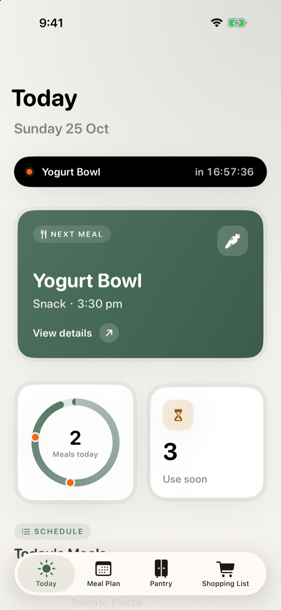
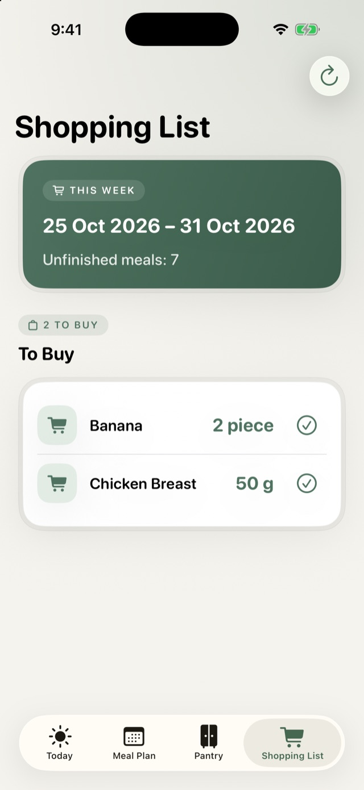
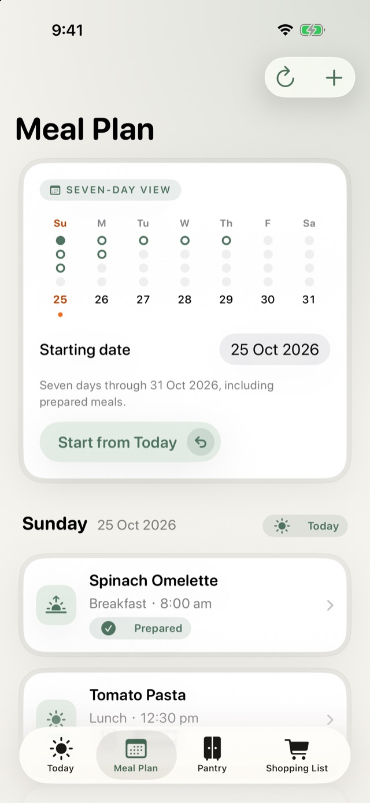
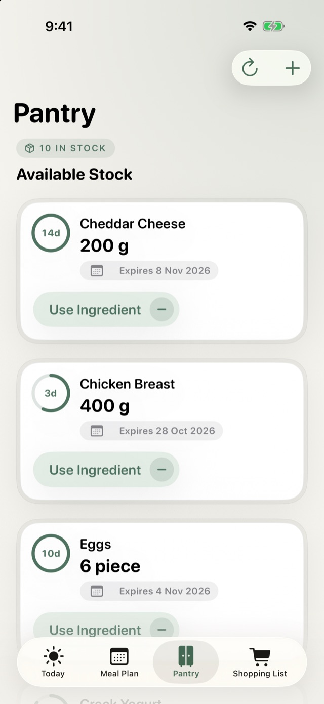

Today at a glance
Your next meal, what's left today, ingredients to use soon, and any meals from the past week you forgot to mark as prepared.
MealPrep Planner links your meal plan to your pantry, so your shopping list already knows what is in the cupboard and what is about to expire.


Your next meal, what's left today, ingredients to use soon, and any meals from the past week you forgot to mark as prepared.
Plan breakfast, lunch, dinner and snacks with their ingredients. Swipe to edit or delete, and tap a meal to open its recipe.
Each item shows how many days it has left. Repeat purchases of the same ingredient are counted together, and the oldest is used first.
It adds up every planned meal and subtracts what you already have. Grams and kilograms, millilitres and litres, "tomato" and "tomatoes" are all matched.
Mark a meal as prepared and its ingredients come out of the pantry. Tick off what you bought and it goes straight in.
See your next meal from the Home Screen, and get a reminder the morning before something in your pantry expires.


No account, no ads, no tracking. Meals and pantry items are stored only on your iPhone or iPad.